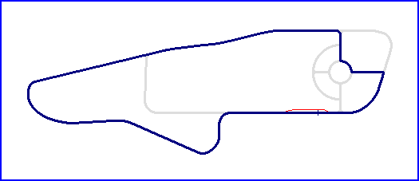

| Length | 1.328 Miles // 2.137 km |
| Direction | Clockwise |
Contact Information |
|
| Address |
Linkoping Motorstadium StadBox 6010 580 06 Linköping |
| Telephone | +46 (0)131 51920 |
| Website | http://www.lms.se |
Linkoping

| Length | 1.328 Miles // 2.137 km |
| Direction | Clockwise |
Contact Information |
|
| Address |
Linkoping Motorstadium StadBox 6010 580 06 Linköping |
| Telephone | +46 (0)131 51920 |
| Website | http://www.lms.se |
Lasted Updated: 09 October 2003 22:40:31 GMT Daylight Time